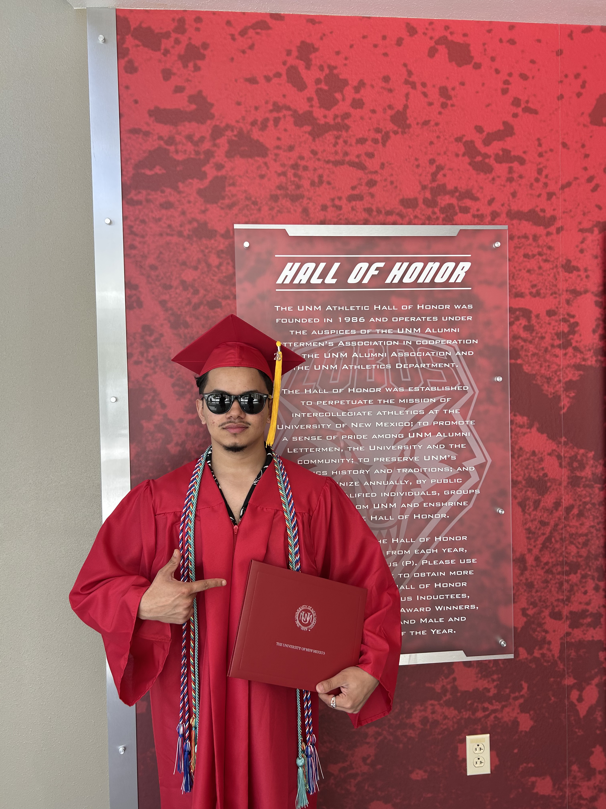

+M.S. Computer Science · University of New Mexico Robotics /
AI / Accessibility / Research
SIGNAL CORE
/ 001
⤧Drag to rotate · scroll to explore
01 / Mission control
Different signals. Shared curiosity.
From a tactile interface to a research connection. Select a
mission to explore the system behind it.
FIG. 01 /
CONNECTION NETWORK
Concept visualization Drag to rotate ↔
Research discovery / Collaboration
GradPath
In development
We are building GradPath, a research discovery and collaboration
prototype for the UNM/CNM App Contest. A place for students to
find a direction, develop an idea, and connect with researchers.
Explore research ideas and real papers through OpenAlex.
Discover researchers and potential student collaborators.
Try browser-based research requests and conversations.
Heartbeat signal collection, participant data workflows, and
research support.
⌁B
Geographic intelligence
FEMA data, QGIS, OpenLayers, and dashboards that make geographic
signals readable.
⌖C
Embodied interaction
Haptic feedback, embedded sensing, assistive design, and the
direction of physical AI.
◎
03 / The builder

KRITIM BASTOLANEPAL → NEW MEXICO
Curiosity has no fixed orbit.
I’m Kritim, originally from Nepal and now a Master’s student in
Computer Science at the University of New Mexico. I build at the
intersection of research, software, robotics, and human-centered
technology.
I’m drawn to systems that connect software with something real: a
person, a sensor, a map, or a machine. Beyond the lab, that
curiosity follows books, films, space, and questions about
intelligence.